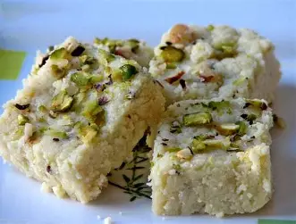
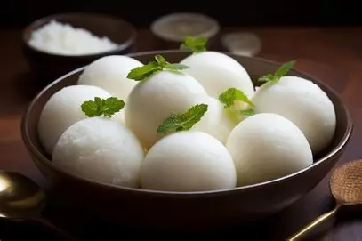
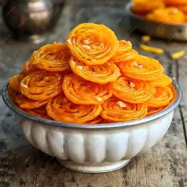
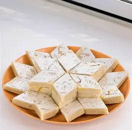
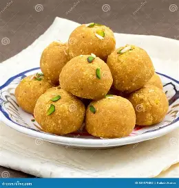
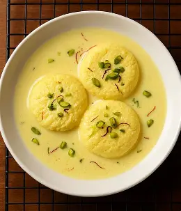
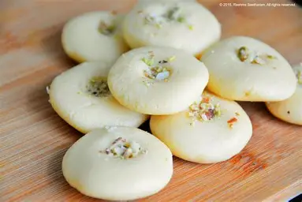
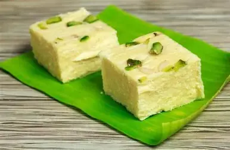
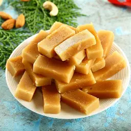
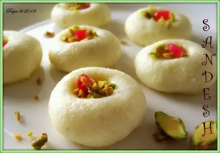

SOME OF OUR RECIPIES
Kalakand

Description: Kalakand is a moist milk cake made with fresh paneer and condensed milk.
Preparation Time: 15 Minutes
Cooking Time: 25 Minutes
Ingredients
- Paneer
- Condensed Milk
- Cardamom
- Pistachios
Recipe
- Cook paneer with condensed milk.
- Stir until thick.
- Set in a tray.
- Cut into squares.
Calories: 180 kcal per serving.
Gulab Jamun

Description: Gulab Jamun is one of India's most loved desserts. Soft milk-solid balls are deep-fried until golden brown and soaked in aromatic sugar syrup flavored with cardamom and rose water.
Preparation Time: 20 Minutes
Cooking Time: 30 Minutes
Servings: 5 People
Ingredients
- 1 cup Khoya (Mawa)
- 3 tbsp Maida
- ¼ tsp Baking Soda
- 2 tbsp Milk
- 1 tbsp Ghee
- Oil for Frying
- 2 cups Sugar
- 2 cups Water
- 4 Green Cardamoms
- 1 tsp Rose Water
Recipe
- Mix khoya, maida, baking soda and milk into a smooth dough.
- Roll into crack-free balls.
- Deep fry on low flame until golden brown.
- Prepare sugar syrup with sugar, water and cardamom.
- Soak the fried balls in warm syrup for 2 hours.
- Serve warm or chilled.
Calories: 180 kcal per piece.
Barfi

Description: Barfi is a rich Indian sweet prepared from milk solids and flavored with cardamom. It is commonly served during festivals and celebrations.
Preparation Time: 10 Minutes
Cooking Time: 20 Minutes
Servings: 6 People
Ingredients
- 2 cups Milk Powder
- 1 cup Condensed Milk
- 2 tbsp Ghee
- ½ tsp Cardamom Powder
- 2 tbsp Almonds
- 2 tbsp Pistachios
- Silver Leaf (Optional)
Recipe
- Heat ghee in a pan.
- Add condensed milk and milk powder.
- Cook until the mixture thickens.
- Add cardamom powder.
- Spread in a greased tray.
- Garnish with nuts and cut into squares.
Calories: 220 kcal per serving.
Rasgulla

Description: Rasgulla is a famous Bengali dessert made from fresh paneer balls cooked in light sugar syrup until soft and spongy.
Preparation Time: 30 Minutes
Cooking Time: 25 Minutes
Servings: 6 People
Ingredients
- 1 litre Milk
- 2 tbsp Lemon Juice
- 1½ cups Sugar
- 4 cups Water
- ½ tsp Cardamom Powder
- Rose Water
Recipe
- Curdle the milk using lemon juice.
- Drain and knead the paneer.
- Make smooth small balls.
- Prepare sugar syrup.
- Cook the balls in boiling syrup for 15 minutes.
- Cool before serving.
Calories: 125 kcal per piece.
Jalebi

Description: Jalebi is a crispy spiral-shaped Indian sweet dipped in fragrant sugar syrup and enjoyed hot.
Preparation Time: 15 Minutes
Cooking Time: 30 Minutes
Servings: 5 People
Ingredients
- 1 cup Maida
- 2 tbsp Corn Flour
- ½ cup Curd
- ½ tsp Baking Powder
- Oil for Frying
- 2 cups Sugar Syrup
- Saffron
Recipe
- Prepare a smooth batter.
- Allow it to rest.
- Pipe spiral shapes into hot oil.
- Fry until crisp.
- Dip immediately in warm sugar syrup.
- Serve hot.
Calories: 150 kcal per piece.
Kaju Katli

Description: Kaju Katli is a premium Indian sweet made from finely ground cashews and sugar. It is a festive favorite.
Preparation Time: 15 Minutes
Cooking Time: 20 Minutes
Servings: 8 People
Ingredients
- 2 cups Cashews
- 1 cup Sugar
- ½ cup Water
- 1 tsp Ghee
- Silver Leaf (Optional)
Recipe
- Grind cashews into a fine powder.
- Prepare sugar syrup.
- Add cashew powder and cook until thick.
- Knead lightly with ghee.
- Roll into a thin sheet.
- Cut into diamond shapes.
Calories: 120 kcal per piece.
Besan Laddu

Description: Besan Laddu is a traditional Indian sweet prepared by roasting gram flour in ghee and mixing it with sugar and dry fruits.
Preparation Time: 10 Minutes
Cooking Time: 25 Minutes
Servings: 8 People
Ingredients
- 2 cups Besan
- 1 cup Ghee
- 1 cup Powdered Sugar
- ½ tsp Cardamom Powder
- Almonds
- Cashews
- Raisins
Recipe
- Roast besan in ghee until aromatic.
- Allow the mixture to cool slightly.
- Add sugar and cardamom powder.
- Mix in chopped dry fruits.
- Shape into round laddus.
- Allow to set before serving.
Calories: 170 kcal per laddu.
Rasmalai

Description: Rasmalai is a rich Bengali dessert made with soft paneer discs soaked in chilled saffron and cardamom flavored milk. It is one of India's most popular festive sweets.
Preparation Time: 30 Minutes
Cooking Time: 35 Minutes
Servings: 6 People
Ingredients
- 1 litre Full Cream Milk
- 2 tbsp Lemon Juice
- 500 ml Milk
- ½ cup Sugar
- ½ tsp Cardamom Powder
- 10-12 Saffron Strands
- 2 tbsp Pistachios
- 2 tbsp Almonds
Recipe
- Prepare fresh paneer using milk and lemon juice.
- Knead until smooth and make flat discs.
- Cook discs in boiling sugar syrup.
- Boil milk until slightly thick.
- Add saffron, sugar and cardamom.
- Soak the discs in chilled milk and garnish with nuts.
Calories: 240 kcal per serving.
Peda

Description: Peda is a famous Indian milk sweet prepared with khoya or milk powder. It is commonly offered during festivals and religious occasions.
Preparation Time: 10 Minutes
Cooking Time: 20 Minutes
Servings: 8 People
Ingredients
- 2 cups Milk Powder
- 1 cup Condensed Milk
- 2 tbsp Ghee
- ½ tsp Cardamom Powder
- Chopped Pistachios
- Almonds
Recipe
- Heat ghee in a non-stick pan.
- Add condensed milk and milk powder.
- Cook until mixture leaves the pan.
- Add cardamom powder.
- Cool slightly and shape into pedas.
- Decorate with pistachios.
Calories: 130 kcal per piece.
Soan Papdi

Description: Soan Papdi is a flaky and crispy Indian sweet made using gram flour, sugar and ghee. It melts instantly in the mouth.
Preparation Time: 20 Minutes
Cooking Time: 40 Minutes
Servings: 10 People
Ingredients
- 1 cup Gram Flour
- 1 cup Maida
- 1½ cups Sugar
- ½ cup Ghee
- ¼ tsp Cardamom Powder
- Almonds & Pistachios
Recipe
- Roast gram flour in ghee.
- Prepare one-string sugar syrup.
- Mix both carefully.
- Stretch the mixture repeatedly.
- Transfer into a greased tray.
- Cut into cubes after cooling.
Calories: 150 kcal per serving.
Mysore Pak

Description: Mysore Pak is a famous South Indian sweet made with gram flour, sugar and lots of ghee. It has a rich buttery texture.
Preparation Time: 15 Minutes
Cooking Time: 30 Minutes
Servings: 8 People
Ingredients
- 1 cup Gram Flour
- 1½ cups Sugar
- 1 cup Ghee
- ½ cup Oil
- ½ cup Water
Recipe
- Prepare sugar syrup.
- Add roasted gram flour slowly.
- Pour hot ghee little by little.
- Cook until frothy.
- Transfer to a tray.
- Cut into squares.
Calories: 220 kcal per serving.
Sandesh

Description: Sandesh is a delicious Bengali sweet prepared using fresh paneer, sugar and flavored with cardamom or saffron.
Preparation Time: 20 Minutes
Cooking Time: 15 Minutes
Servings: 6 People
Ingredients
- 500 g Fresh Paneer
- ½ cup Powdered Sugar
- ½ tsp Cardamom Powder
- Pistachios
- Saffron (Optional)
Recipe
- Knead paneer until smooth.
- Cook with sugar on low flame.
- Add cardamom powder.
- Cool slightly.
- Shape using moulds.
- Decorate with pistachios and serve chilled.
Calories: 110 kcal per serving.